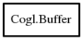

Buffer
Object Hierarchy:

Description:
[ SimpleType ]
public struct Buffer
Content:
Static methods:
- public static uint get_size (Buffer buffer)
- public static BufferUpdateHint get_update_hint (Buffer buffer)
- public static void* map (Buffer buffer, BufferAccess access, BufferMapHint hints)
- public static void* map_range (Buffer buffer, ulong offset, ulong size, BufferAccess access, BufferMapHint hints) throws Error
- public static Bool set_data (Buffer buffer, ulong offset, void* data, ulong size)
- public static void set_update_hint (Buffer buffer, BufferUpdateHint hint)
- public static void unmap (Buffer buffer)